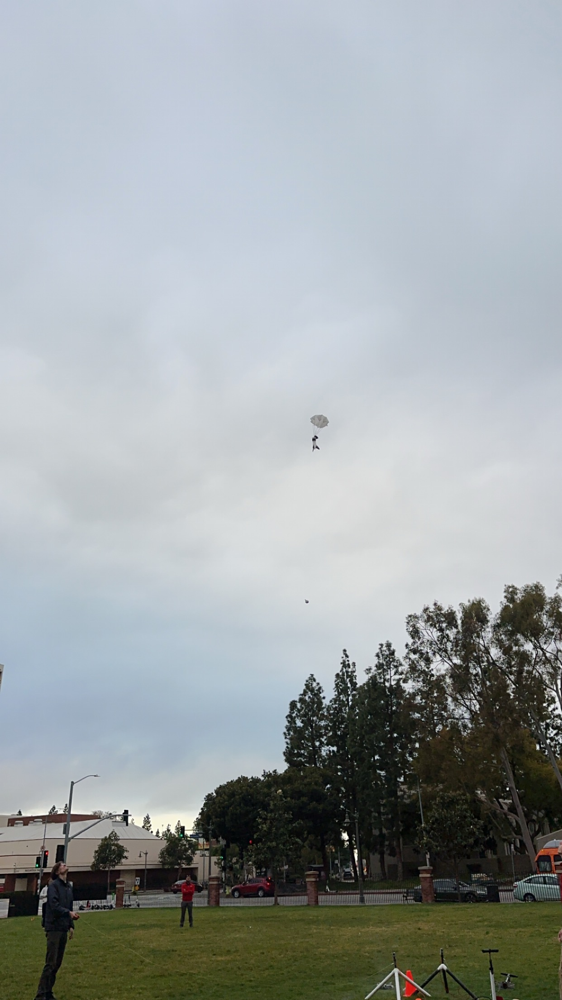

Hardware
Water Rocket Flight Optimization
MATLAB simulation optimizing air/water ratio, pressure, and parachute size for maximum altitude.
Overview
Developed a MATLAB simulation to optimize a water rocket's air-to-water fill ratio, initial pressure, and parachute surface area to maximize apogee.
Approach
Modeled thrust decay, drag, and parachute deployment dynamics and performed parametric sweeps.
Results
Identified optimal fill and parachute configurations improving altitude and landing reliability.